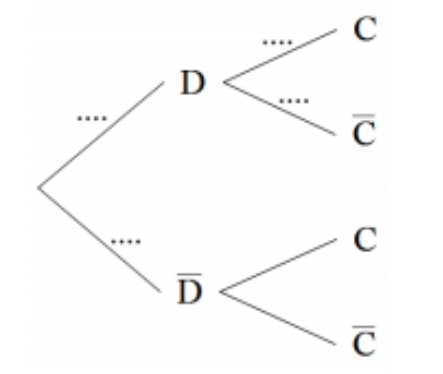

Série N° 3¶
Exercice 1¶
On choisit deux boules au hasard dans une urne contenant 8 blanches, 4 noires et 2 oranges. Supposons que l’on reçoive 2 Dhs (Dirham) pour chaque boule noire tirée et que l’on perde 1 Dh pour chaque boule blanche tirée. Désignons les gains nets par la variable aléatoire \(X\). Quelles sont les valeurs possibles pour \(X\) et quelles sont les probabilités associées à ces valeurs ?
Exercice 2¶
Une étude a montré que les téléviseurs peuvent rencontrer deux types de défauts : un défaut sur la dalle, un défaut sur le condensateur. L’étude indique que :
\(3\%\)des téléviseurs présentent un défaut sur la dalle et parmi ceux-ci \(2\%\) ont aussi un défaut sur le condensateur.
\(5\%\) des téléviseurs ont un défaut sur le condensateur.
On choisit au hasard un téléviseur et on considère les évènements suivants :
\(D\): « le téléviseur a un défaut sur la dalle »
\(C\): « le téléviseur a un défaut sur le condensateur »
Les résultats seront approchés si nécessaire à \(10^{-4}\) près.
Calculer \(p(D)\), \(p(C)\) puis donner \(p(C|D)\) .
Recopier l’arbre ci-dessous et compléter uniquement les pointillés par les probabilités associées :

Calculer la probabilité \(p(D\cap C)\).
Le téléviseur choisi a un défaut sur le condensateur. Quelle est alors la probabilité qu’il ait un défaut sur la dalle ?
Calculer la probabilité que le téléviseur choisi ait un défaut sur le condensateur et n’ait pas de défaut sur la dalle.
Exercice 3¶
On lance deux des (numéroté de 1 à 6 chacun) de façon indépendante. Déterminer la loi de la variable aléatoire \(X\) qui prend la somme des deux résultats obtenus.
Déterminer la loi de \(X\).
Déterminer sa fonction de répartition.
Déterminer son espérance et sa variance.
Exercice 4¶
On suppose que la probabilité d’obtenir « Face » est \(\dfrac{1}{2}\) lors du lancer d’une pièce de monnaie.
On lance une pièce de monnaie. Soit \(X\) la variable aléatoire qui prend 1 si le résultat est « Face » et 0 si non. Déterminer la loi de \(X\). Sa fonction de répartition et son ésperance.
Exercice 5¶
Une pièce de monnaie non équilibrée est lancée, avec la probabilité d’obtenir pile est \(0 < p< 1\), jusqu’à ce que « face » apparaisse pour la première fois.
Calculer les probabilités d’obtenir face : au premier lancer, au deuxième lancer, au troisième lancer, au lancer \(n\).
Démontrer que la somme des probabilités est égale à un.
Soit \(X\) le nombre de lancers pour obtenir face. Calculer les probabilités :
Que \(X\) soit un nombre impair.
Que \(X\) soit un nombre pair.
Calculer \(\mathbb E (X)\), \(\mathbb E (X^2)\) en déduire \(V(x)\).
Exercice 6¶
Le coût de fabrication d’une tablette d’une marque donnée est de 200 euros. Un mauvais réglage sur une machine qui les fabrique est à l’origine de deux types de défauts noté \(A\) et \(B\). Une tablette peut avoir les deux défauts en même temps.
\(10\%\) des tablettes possèdent le défaut \(A\) ;
\(7\%\) des tablettes possèdent le défaut \(B\);
\(2\%\) des tablettes possèdent les deux défauts.
Avant la commercialisation des tablettes, au prix unitaire de \(500\) euros, celles-ci sont testées. Celles qui présentent des défauts sont réparées. Corriger le défaut \(A\) coûte \(50\) euros et corriger le défaut \(B\) coûte \(100\) euros.
Une tablette est prise au hasard. Quel bénéfice le fabriquant peut-il espérer de sa vente ?
S’il vend \(10\) millions de tablettes, quel bénéfice global peut-il espérer ?
Exercice 7¶
Un commercial contacte par téléphone des clients éventuels. Il sait qu’il y a \(2\%\) de chance que la personne contactée lui passe commande.
Ce commercial appelle \(n\) personnes. On assimile la situation à un tirage avec remise.
On appelle \(X\) la variable aléatoire correspondant au nombre de personnes qui a passé commande.
Quelle loi suit \(X\)? Justifier et donner ses paramètres.
Si \(n=250\), donner une valeur approchée au millième de \(P(X = 5)\).
Exercice 8¶
Soit \(X\) une variable aléatoire suivant une loi binomiale de paramètres \(n=9\) et \(p=\dfrac{1}{3}\).
Calculer son espérance et son écart-type.
Calculer \(P(X\geq 2)\) . Donner une valeur approchée au millième.
Exercice 9¶
Écrire un algorithme permettant d’afficher, pour une variable aléatoire \(X\) suivant une loi binomiale de paramètres \(n\) et \(p\) fournis par l’utilisateur, les probabilités \(P(X \leq k)\) pour \(k\) variant de 0 à \(n\).
Exercice 10¶
Une urne contient 10 boules blanches et \(n\) boules rouges, \(n\) étant un entier naturel supérieur ou égal à 2. On fait tirer à un joueur des boules de l’urne. À chaque tirage, toutes les boules ont la même probabilité d’être tirées. Pour chaque boule blanche tirée, il gagne 2 euros et pour chaque boule rouge tirée, il perd 3 euros.
On désigne par \(X\) la variable aléatoire correspondant au gain algébrique obtenu par le joueur.
Les deux questions de l’exercice sont indépendantes.
Le joueur tire deux fois successivement et sans remise une boule de l’urne.
Demontrer que \(P(X=-1) = \dfrac{20n}{(n+10)(n+9)}\)
Calculer, en fonction de \(n\) la probabilité correspondant aux deux autres valeurs prises par la variable \(X\).
Vérifier que l’espérance mathématique de la variable aléatoire \(X\) vaut:
\[\dfrac{-6n^2 - 14n + 360}{(n+10)(n+9)}\]Déterminer les valeurs de \(n\) pour lesquelles l’espérance mathématique est strictement positive.
Le joueur tire \(20\) fois successivement et avec remise une boule de l’urne. Les tirages sont indépendants.
Déterminer la valeur minimale de l’entier \(n\) afin que la probabilité d’obtenir au moins une boule rouge au cours de ces \(20\) tirages soit strictement supérieure à 0,999.